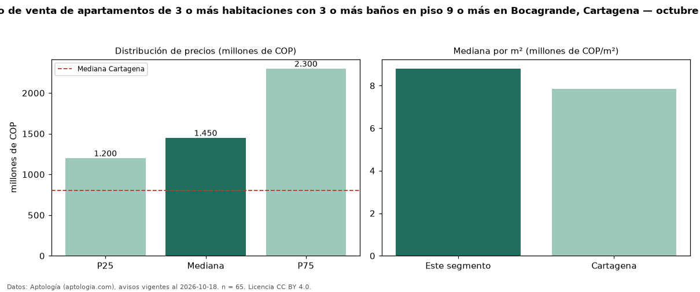

Precio de venta de apartamentos de 3 o más habitaciones con 3 o más baños en piso 9 o más en Bocagrande, Cartagena — octubre 2026
En Bocagrande, Cartagena, la mediana de precio de venta de apartamentos de 3 o más habitaciones con 3 o más baños en piso 9 o más es COP 1,45 mil millones, según 65 avisos vigentes. Eso es 10 % más que la mediana de los apartamentos de 3 o más habitaciones con 3 o más baños en venta de Bocagrande (COP 1,31 mil millones, n = 282); este segmento reúne el 23 % de esos avisos. Por metro cuadrado, la mediana es COP 8,80 millones/m² (n = 61), 16 % por encima de los apartamentos de 3 o más habitaciones con 3 o más baños en venta de Bocagrande (COP 7,59 millones/m²). El área mediana anunciada es 166 m². La administración mediana declarada es COP 1,22 millones al mes (n = 57). La mitad central de los avisos va de COP 1,20 mil millones a COP 2,30 mil millones (razón 1,9), una dispersión moderada. El estrato más frecuente es 6 (86 % de los avisos con estrato). La mediana de todos los apartamentos en venta de Cartagena es COP 800 millones (+81 % de diferencia). Datos: Aptología (aptologia.com), CC BY 4.0 — https://www.aptologia.com/venta/cartagena/bocagrande. Archivos: PDF, CSV con las cifras y gráfica PNG.

| Avisos únicos | 65 |
|---|---|
| Percentil 25 | COP 1.200.000.000 |
| Mediana | COP 1.450.000.000 |
| Percentil 75 | COP 2.300.000.000 |
| Mediana por m² | COP 8.802.816 |
Fuente: avisos vigentes de portales inmobiliarios recopilados por Aptología, deduplicados (mínimo 30 avisos únicos por celda). Precios pedidos, no cerrados. Fecha: 2026-10-18.